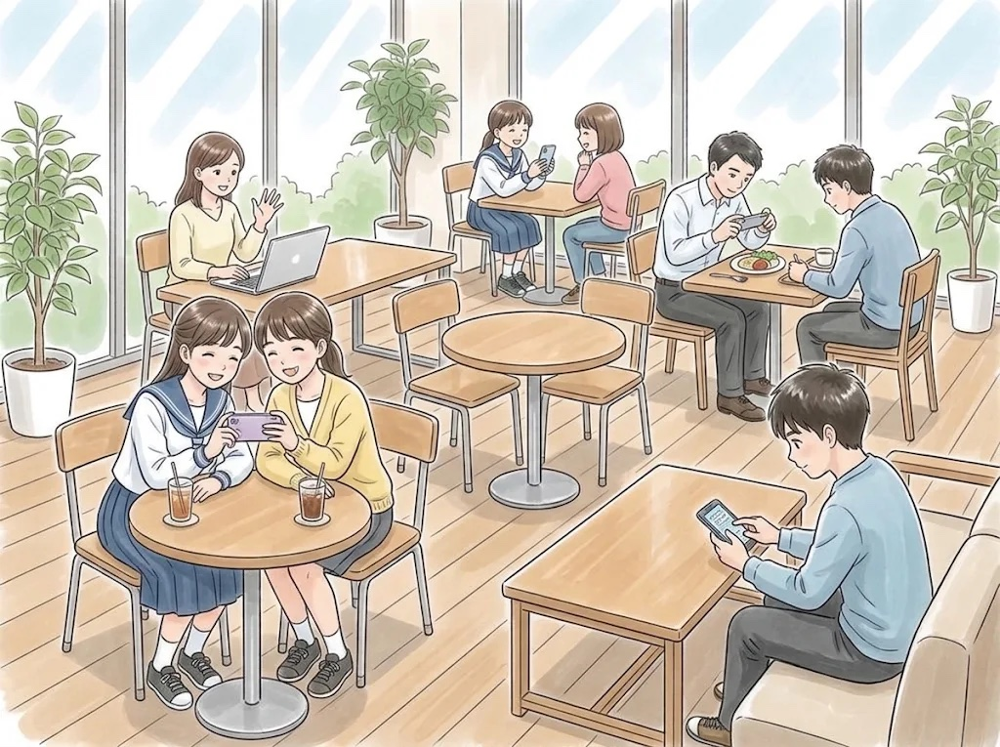
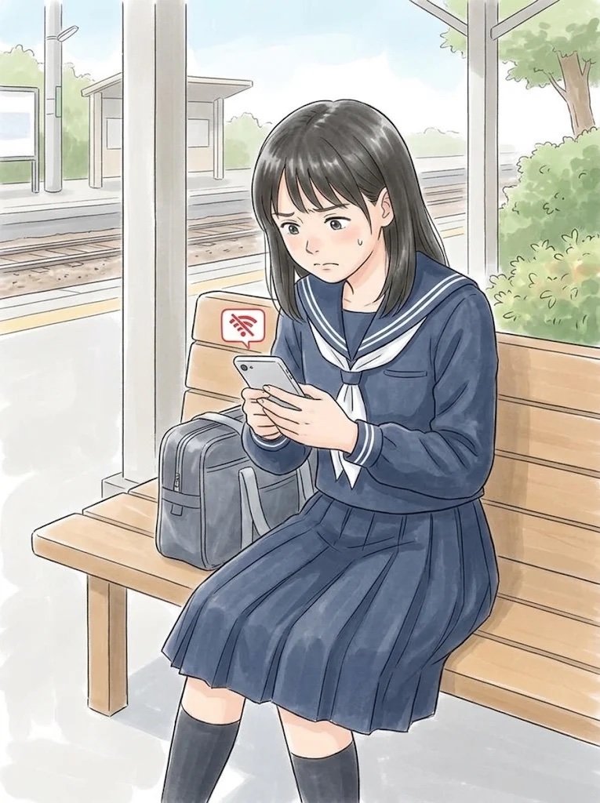

Pattern 1: She cannot send a message because there is no Internet connection.
Pattern 2: Her smartphone has no signal, so she cannot post her photo online.
Q: According to the passage, how can people stay connected with each other and feel closer even when they cannot meet in person?
These days, many young people use social media to communicate with their friends. Do you think using social media is a good way to communicate?
Your Opinion: [ Yes / No ]
Do you often share photos or videos with your friends or family online?
Your Opinion: [ Yes (I do) / No (I don't) ]
"According to the passage, how can people stay connected with each other and feel closer even when they cannot meet in person?"
By sending messages and sharing photos with friends who live far away.
"Tell me as much as you can about what the people are doing."
A: Two girls are taking a selfie together.
B: A boy is sending a message on his smartphone.
C: A woman is having a video call on her laptop.
D: A man is taking a picture of his lunch.
E: A girl is showing her smartphone screen to her friend.
"Now, look at the girl in Picture B. Please describe the situation."
• She cannot send a message because there is no Internet connection.
• Her smartphone has no signal, so she cannot post her photo online.
"These days, many young people use social media to communicate with their friends. Do you think using social media is a good way to communicate?"
(Yes): People can easily talk with friends who live far away anytime. / It is a great way to share useful information quickly.
(No): Text messages do not show feelings well, so misunderstandings happen. / Talking face-to-face is better for strong friendships.
"Do you often share photos or videos with your friends or family online?"
(Yes): I like sharing photos of trips with my grandparents who live far away. / It is easy and free to send pictures.
(No): I am careful about my privacy, so I do not put photos on the Internet. / I prefer showing photos in person.